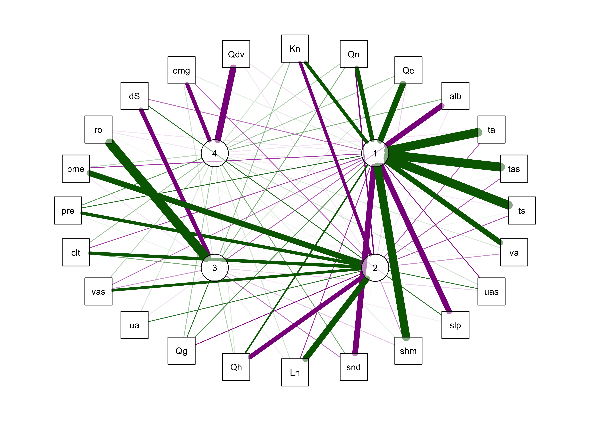

Principal Components Analysis
NOTE: This page has been revised for Winter 2024, but may undergo further edits.
1 Introduction
Principal components analysis (PCA) is a widely used multivariate analysis method, the general aim of which is to reveal systematic covariations among a group of variables. The analysis can be motivated in a number of different ways, including (in geographical or Earth-system science contexts) finding groups of variables that measure the same underlying dimensions of a data set, describing the basic anomaly patterns that appear in spatial data sets, or producing a general index of the common variation of a set of variables. The analysis is also known as factor analysis in many contexts, or eigenvector analysis or EOF analysis (for “empirical orthogonal functions”) in meteorology and climatology.
1.1 A simple example
A classic data set for illustrating PCA is one that appears in John C. Davis’s 2002 book Statistics and data analysis in geology, Wiley (UO Library, QE48.8 .D38 2002). The data consist of 25 boxes or blocks with random dimensions (the long, intermediate and short axes of the boxes), plus some derived variables, like the length of the longest diagonal that can be contained within a box.
Here’s the data: [boxes.csv]
- Example: Davis’ boxes (data, plot, scatter, components), (Davis, J.C., 2001, Statistics and Data Analysis in Geology, Wiley)
- Derivation of principal components
{kind=link}
{kind=link}
{kind=link}
{kind=link}
1.2 Read and subset the data
First, only two variables will be analyzed, in order to be able to visualize how the components are defined. Read the data:
# read a .csv file of Davis's data
boxes_path <- "/Users/bartlein/Projects/RESS/data/csv_files/"
boxes_name <- "boxes.csv"
boxes_file <- paste(boxes_path, boxes_name, sep="")
boxes <- read.csv(boxes_file)
str(boxes)## 'data.frame': 25 obs. of 7 variables:
## $ long : num 3.76 8.59 6.22 7.57 9.03 5.51 3.27 8.74 9.64 9.73 ...
## $ inter : num 3.66 4.99 6.14 7.28 7.08 3.98 0.62 7 9.49 1.33 ...
## $ short : num 0.54 1.34 4.52 7.07 2.59 1.3 0.44 3.31 1.03 1 ...
## $ diag : num 5.28 10.02 9.84 12.66 11.76 ...
## $ sphere : num 9.77 7.5 2.17 1.79 4.54 ...
## $ axis : num 13.74 10.16 2.73 2.1 6.22 ...
## $ areavol: num 4.782 2.13 1.089 0.822 1.276 ...Make a matrix of two variables long (long axis of each
box), and diag (longest diagonal that fits in a box).
boxes_matrix <- data.matrix(cbind(boxes[,1],boxes[,4]))
dimnames(boxes_matrix) <- list(NULL, cbind("long","diag"))Examine a scatter plot, and get the correlations between the variables:
## long diag
## long 1.0000000 0.9112586
## diag 0.9112586 1.0000000The two variables are obviously related, but not exactly (because the other dimensions of the box, the short and intermediate axis length) also influence the longest diagonal value.
1.3 PCA of the two-variable example
Do a PCA using the princomp() function from the
stats package. The loadings() function
extracts the loadings or the correlations between the input
variables and the new components, and the the biplot()
function creates a biplot – a single figure that plots the loadings as
vectors and the component scores (or the value of each
component) as points represented by the observation numbers.
## Call:
## princomp(x = boxes_matrix, cor = T)
##
## Standard deviations:
## Comp.1 Comp.2
## 1.382483 0.297895
##
## 2 variables and 25 observations.## Importance of components:
## Comp.1 Comp.2
## Standard deviation 1.3824828 0.2978950
## Proportion of Variance 0.9556293 0.0443707
## Cumulative Proportion 0.9556293 1.0000000##
## Loadings:
## Comp.1 Comp.2
## long 0.707 0.707
## diag 0.707 -0.707
##
## Comp.1 Comp.2
## SS loadings 1.0 1.0
## Proportion Var 0.5 0.5
## Cumulative Var 0.5 1.0The component standard deviation values describe the importance of each component, and the proportion of the total variance of all variables being analyzed accounted for by each component.
Note the angle between the vectors on the bipolt–the correlation
between two variables is equal to the cosine of the angle between the
vectors (θ), or r = cos(θ). Here the angle is
24.3201359, which is found by the following R code:
acos(cor(boxes_matrix[,1],boxes_matrix[,2]))/((2*pi)/360).
The components can be drawn on the scatter plot as follows:
# get parameters of component lines (after Everitt & Rabe-Hesketh)
load <- boxes_pca$loadings
slope <- load[2,]/load[1,]
mn <- apply(boxes_matrix,2,mean)
intcpt <- mn[2]-(slope*mn[1])
# scatter plot with the two new axes added
par(pty="s") # square plotting frame
xlim <- range(boxes_matrix) # overall min, max
plot(boxes_matrix, xlim=xlim, ylim=xlim, pch=16, cex=0.5, col="purple") # both axes same length
abline(intcpt[1],slope[1],lwd=2) # first component solid line
abline(intcpt[2],slope[2],lwd=2,lty=2) # second component dashed
legend("right", legend = c("PC 1", "PC 2"), lty = c(1, 2), lwd = 2, cex = 1)
# projections of points onto PCA 1
y1 <- intcpt[1]+slope[1]*boxes_matrix[,1]
x1 <- (boxes_matrix[,2]-intcpt[1])/slope[1]
y2 <- (y1+boxes_matrix[,2])/2.0
x2 <- (x1+boxes_matrix[,1])/2.0
segments(boxes_matrix[,1],boxes_matrix[,2], x2, y2, lwd=2,col="purple")This plot illustrates the idea of the first (or “principal” component) providing an optimal summary of the data–no other line drawn on this scatter plot would produce a set of projected values of the data points onto the line with greater variance. The line also appears similar to a regression line, and in fact and PCA of two variables (as here) is equivalent to a “reduced major-axis” regression analysis.
2 Derivation of principal components and their properties
The formal derivation of principal components analysis requires the use of matix algebra.
Because the components are derived by solving a particular optimization problem, they naturally have some “built-in” properties that are desirable in practice (e.g. maximum variability). In addition, there are a number of other properties of the components that can be derived:
- variances of each component, and the proportion of the total variance of the original variables are are given by the eigenvalues;
- component scores may be calculated, that illustrate the value of each component at each observation;
- component loadings that describe the correlation between each component and each variable may also be obtained;
- the correlations among the original variables can be reproduced by the p-components, as can that part of the correlations “explained” by the first q components.
- the original data can be reproduced by the p components, as can those parts of the original data “explained” by the first q components;
- the components can be “rotated” to increase the interpretability of the components.
3 A second example: Controls of mid-Holocene aridity in Eurasia
The data set here is a “stacked” data set of output from thirteen “PMIP3” simulations of mid-Holocene climate (in particular, the long-term mean differences between the mid-Holocene simulations and those for the pre-industrial period) for a region in northern Eurasia. The objective of the analysis was to examine the systematic relationship among a number of different climate variables as part of understanding the mismatch between the simulations and paleoenvironmental observations (reconstructions), where the simulations were in general drier and warmer than the climate reconstructed from the data. (See Bartlein, P.J., S.P. Harrison and K. Izumi, 2017, Underlying causes of Eurasian mid-continental aridity in simulations of mid-Holocene climate, Geophysical Research Letters 44:1-9, http://dx.doi.org/10.1002/2017GL074476)
The variable include:
Kext: Insolation at the top of the atmosphereKn: Net shortwave radiationLn: Net longwave ratiation
Qn: Net radiationQe: Latent heatingQh: Sensible heating
Qg: Substrate heatingbowen: Bowen ratio (Qh/Qn)alb: Albedota: 850 mb temperaturetas: Near-surface (2 m) air temperaturets: Surface (skin) temperatureua: Eastward wind component, 500 hpa levelva: Northward wind component, 500 hPa levelomg: 500 hPa vertical velocityuas: Eastward wind component, surfacevas: Northward wind component, surfaceslp: Mean sea-level pressureQdv: Moisture divergenceshm: Specific humidityclt: Cloudinesspre: Precipitation rateevap: Evaporation ratepme: P-E ratesm: Soil moisturero: RunoffdS: Change in moisture storagesnd: Snow depth
The data set was assebled by stacking the monthly long-term mean differneces from each model on top of one another, creating a 13 x 12 row by 24 column array. This arrangement of the data will reveal the common variations in the seasonal cycles of the long-term mean differences.
3.1 Read and transform the data
Load necessary packages.
Read the data:
# read data
datapath <- "/Users/bartlein/Projects/RESS/data/csv_files/"
csvfile <- "aavesModels_ltmdiff_NEurAsia.csv"
input_data <- read.csv(paste(datapath, csvfile, sep=""))
mm_data_in <- input_data[,3:30]
names(mm_data_in)## [1] "Kext" "Kn" "Ln" "Qn" "Qe" "Qh" "Qg" "bowen" "alb" "ta" "tas" "ts"
## [13] "ua" "va" "omg" "uas" "vas" "slp" "Qdv" "shm" "clt" "pre" "evap" "pme"
## [25] "sm" "ro" "dS" "snd"## Kext Kn Ln Qn Qe
## Min. :-13.6300 Min. :-14.1700 Min. :-6.001000 Min. :-13.9000 Min. :-8.0500
## 1st Qu.:-10.4225 1st Qu.: -5.5927 1st Qu.:-1.111500 1st Qu.: -4.0630 1st Qu.:-1.1265
## Median : -6.4320 Median : -2.4285 Median : 0.299050 Median : -1.7405 Median :-0.5851
## Mean : 0.3369 Mean : 0.4261 Mean :-0.005344 Mean : 0.4208 Mean :-0.1175
## 3rd Qu.: 7.7847 3rd Qu.: 3.9592 3rd Qu.: 1.561250 3rd Qu.: 3.1260 3rd Qu.: 0.4831
## Max. : 27.9600 Max. : 18.0700 Max. : 3.333000 Max. : 16.1200 Max. : 7.9230
##
## Qh Qg bowen alb ta
## Min. :-5.1570 Min. :-5.0070 Min. :-9.870e+04 Min. :-0.780800 Min. :-2.2300
## 1st Qu.:-1.9760 1st Qu.:-0.9643 1st Qu.: 0.000e+00 1st Qu.:-0.001757 1st Qu.:-0.7361
## Median :-0.8945 Median :-0.2530 Median : 0.000e+00 Median : 0.356050 Median :-0.3137
## Mean : 0.3968 Mean : 0.1404 Mean : 2.826e+13 Mean : 0.705529 Mean : 0.1110
## 3rd Qu.: 2.0897 3rd Qu.: 1.3645 3rd Qu.: 1.000e+00 3rd Qu.: 1.113250 3rd Qu.: 0.8729
## Max. :12.0900 Max. : 6.3150 Max. : 2.650e+15 Max. : 6.185000 Max. : 3.1420
##
## tas ts ua va omg
## Min. :-2.76900 Min. :-2.88700 Min. :-0.98680 Min. :-0.495200 Min. :-3.320e-03
## 1st Qu.:-0.92268 1st Qu.:-0.96540 1st Qu.:-0.35147 1st Qu.:-0.134500 1st Qu.:-6.360e-04
## Median :-0.42775 Median :-0.43625 Median :-0.09715 Median :-0.003020 Median :-9.845e-05
## Mean :-0.02964 Mean :-0.02853 Mean :-0.07626 Mean : 0.002278 Mean :-1.757e-04
## 3rd Qu.: 0.82620 3rd Qu.: 0.82827 3rd Qu.: 0.15207 3rd Qu.: 0.126825 3rd Qu.: 2.918e-04
## Max. : 3.14600 Max. : 3.34300 Max. : 1.22400 Max. : 0.492300 Max. : 1.370e-03
##
## uas vas slp Qdv shm
## Min. :-0.375000 Min. :-0.13690 Min. :-358.90 Min. :-5.390e-10 Min. :-5.020e-04
## 1st Qu.:-0.104800 1st Qu.:-0.03717 1st Qu.:-114.83 1st Qu.:-5.603e-11 1st Qu.:-9.333e-05
## Median :-0.022700 Median : 0.02635 Median : -11.97 Median :-1.990e-11 Median :-2.340e-05
## Mean :-0.008201 Mean : 0.02238 Mean : -48.91 Mean :-1.825e-11 Mean : 6.629e-05
## 3rd Qu.: 0.092525 3rd Qu.: 0.07550 3rd Qu.: 45.24 3rd Qu.: 3.635e-11 3rd Qu.: 1.655e-04
## Max. : 0.591500 Max. : 0.22940 Max. : 126.30 Max. : 2.030e-10 Max. : 9.930e-04
##
## clt pre evap pme sm
## Min. :-5.8260 Min. :-0.266700 Min. :-0.278200 Min. :-0.26930 Min. :-40.330
## 1st Qu.:-0.8750 1st Qu.:-0.037850 1st Qu.:-0.037825 1st Qu.:-0.04333 1st Qu.:-11.960
## Median : 0.2599 Median :-0.000015 Median :-0.016950 Median : 0.00441 Median : -5.433
## Mean :-0.1085 Mean :-0.012835 Mean :-0.001746 Mean :-0.01109 Mean : -9.501
## 3rd Qu.: 1.0036 3rd Qu.: 0.023350 3rd Qu.: 0.016725 3rd Qu.: 0.03058 3rd Qu.: -3.272
## Max. : 2.4320 Max. : 0.104900 Max. : 0.273700 Max. : 0.10930 Max. : 7.799
##
## ro dS snd
## Min. :-0.288000 Min. :-0.424700 Min. :-0.0056800
## 1st Qu.:-0.020650 1st Qu.:-0.052750 1st Qu.:-0.0000117
## Median :-0.006690 Median : 0.012300 Median : 0.0054200
## Mean :-0.008101 Mean :-0.006516 Mean : 0.0094521
## 3rd Qu.: 0.000247 3rd Qu.: 0.044000 3rd Qu.: 0.0156750
## Max. : 0.439200 Max. : 0.262900 Max. : 0.0593000
## NA's :2There are a few fix-ups to do. Recode a few missing (NA) values of snow depth to 0.0:
Remove some uncessary or redundant variable:
# remove uneccesary variables
dropvars <- names(mm_data_in) %in% c("Kext","bowen","sm","evap")
mm_data <- mm_data_in[!dropvars]
names(mm_data)## [1] "Kn" "Ln" "Qn" "Qe" "Qh" "Qg" "alb" "ta" "tas" "ts" "ua" "va" "omg" "uas" "vas" "slp"
## [17] "Qdv" "shm" "clt" "pre" "pme" "ro" "dS" "snd"3.2 Correlations among variables
It’s useful to look at the correlations among the long-term mean
differences among the variables. This could be done using a matrix
scatterplot (plot(mm_data, pch=16, cex=0.5), but there are
enough variables (24) to make that difficult to interpret. Another
approach is to look at a corrplot() image:
The plaid-like appearance of the plot suggests that there are several groups of variables whose variations of long-term mean differences throughout the year are similar.
The correlations can also be illustrated by plotting the correlations
as a network graph using the qgraph() function, with the
strength of the correlations indicated by the width of the lines (or
“edges”), and the sign by the color (green = positive and magenta =
negative).
qgraph(cor_mm_data, title="Correlations, multi-model ltm differences over months",
# layout = "spring",
posCol = "darkgreen", negCol = "darkmagenta", arrows = FALSE,
node.height=0.5, node.width=0.5, vTrans=128, edge.width=0.75, label.cex=1.0,
width=7, height=5, normalize=TRUE, edge.width=0.75 ) 
A useful variant of this plot is provided by using the strength of the correlations to arrange the nodes (i.e. the variables). This is done by using the “Fruchterman-Reingold” algorithm that invokes the concept of spring tension pulling the nodes of the more highly correlated variables toward one another.
qgraph(cor_mm_data, title="Correlations, multi-model ltm differences over months",
layout = "spring", repulsion = 0.75,
posCol = "darkgreen", negCol = "darkmagenta", arrows = FALSE,
node.height=0.5, node.width=0.5, vTrans=128, edge.width=0.75, label.cex=1.0,
width=7, height=5, normalize=TRUE, edge.width=0.75 ) 3.3 PCA of the PMIP 3 data
Do a principal components analysis of the long-term mean differneces
using the principal() function from the psych
package. Initiall, extract eight components:
## Principal Components Analysis
## Call: principal(r = mm_data, nfactors = nfactors, rotate = "none")
## Standardized loadings (pattern matrix) based upon correlation matrix
## PC1 PC2 PC3 PC4 PC5 PC6 PC7 PC8 h2 u2 com
## Kn 0.95 -0.09 0.02 -0.19 0.00 0.12 0.00 -0.14 0.99 0.013 1.2
## Ln -0.79 0.36 0.16 0.09 -0.25 0.02 -0.06 0.21 0.91 0.090 2.0
## Qn 0.94 0.01 0.08 -0.21 -0.08 0.16 -0.02 -0.11 0.98 0.018 1.2
## Qe 0.68 0.44 0.02 -0.03 -0.33 0.44 0.04 0.10 0.97 0.034 3.1
## Qh 0.91 -0.18 -0.04 -0.18 0.08 0.02 -0.05 -0.18 0.94 0.060 1.3
## Qg 0.69 -0.18 0.35 -0.31 -0.04 -0.01 -0.03 -0.15 0.76 0.241 2.2
## alb -0.64 -0.30 -0.32 -0.38 0.09 0.15 -0.03 0.30 0.87 0.126 3.5
## ta 0.91 0.23 -0.13 0.12 0.07 -0.14 0.05 0.08 0.95 0.049 1.3
## tas 0.93 0.23 -0.09 0.12 0.07 -0.10 0.04 0.05 0.96 0.043 1.2
## ts 0.93 0.22 -0.09 0.11 0.08 -0.10 0.04 0.04 0.96 0.043 1.2
## ua -0.26 0.39 0.06 0.10 0.71 0.31 -0.19 0.11 0.88 0.123 2.6
## va 0.73 0.30 -0.06 0.02 0.19 -0.30 0.00 0.07 0.75 0.250 1.9
## omg 0.27 -0.50 0.02 0.53 -0.20 -0.07 0.22 0.24 0.75 0.252 3.7
## uas -0.74 0.09 0.05 -0.06 0.15 0.36 0.42 -0.22 0.94 0.064 2.5
## vas -0.67 0.37 -0.03 0.03 0.13 -0.04 0.57 -0.05 0.93 0.072 2.7
## slp -0.89 -0.14 0.12 0.17 -0.22 -0.05 -0.01 -0.04 0.92 0.083 1.3
## Qdv 0.01 -0.39 0.00 0.70 0.11 0.37 -0.24 -0.11 0.86 0.138 2.6
## shm 0.79 0.37 -0.19 0.08 -0.08 0.06 0.07 0.30 0.92 0.083 2.0
## clt -0.65 0.30 0.44 -0.06 -0.24 -0.05 -0.18 -0.14 0.82 0.179 3.0
## pre 0.02 0.89 0.18 0.02 -0.21 0.20 -0.11 0.06 0.92 0.081 1.4
## pme -0.78 0.38 0.15 0.05 0.19 -0.30 -0.14 -0.04 0.92 0.077 2.2
## ro 0.10 -0.16 0.89 -0.04 0.21 -0.09 0.07 0.25 0.96 0.040 1.4
## dS -0.65 0.38 -0.55 0.07 -0.04 -0.16 -0.13 -0.20 0.96 0.035 3.1
## snd -0.67 -0.28 -0.25 -0.41 -0.02 0.09 -0.10 0.30 0.86 0.141 3.0
##
## PC1 PC2 PC3 PC4 PC5 PC6 PC7 PC8
## SS loadings 12.18 2.85 1.76 1.40 1.09 0.94 0.76 0.68
## Proportion Var 0.51 0.12 0.07 0.06 0.05 0.04 0.03 0.03
## Cumulative Var 0.51 0.63 0.70 0.76 0.80 0.84 0.87 0.90
## Proportion Explained 0.56 0.13 0.08 0.06 0.05 0.04 0.04 0.03
## Cumulative Proportion 0.56 0.69 0.78 0.84 0.89 0.93 0.97 1.00
##
## Mean item complexity = 2.1
## Test of the hypothesis that 8 components are sufficient.
##
## The root mean square of the residuals (RMSR) is 0.03
## with the empirical chi square 69.66 with prob < 1
##
## Fit based upon off diagonal values = 1The analysis suggests that only five components are as “important” as any of the original (standardized) variables, so repeate the analysis extracting just five components:
## Principal Components Analysis
## Call: principal(r = mm_data, nfactors = nfactors, rotate = "none")
## Standardized loadings (pattern matrix) based upon correlation matrix
## PC1 PC2 PC3 PC4 PC5 h2 u2 com
## Kn 0.95 -0.09 0.02 -0.19 0.00 0.95 0.048 1.1
## Ln -0.79 0.36 0.16 0.09 -0.25 0.86 0.137 1.8
## Qn 0.94 0.01 0.08 -0.21 -0.08 0.94 0.056 1.1
## Qe 0.68 0.44 0.02 -0.03 -0.33 0.76 0.237 2.2
## Qh 0.91 -0.18 -0.04 -0.18 0.08 0.91 0.094 1.2
## Qg 0.69 -0.18 0.35 -0.31 -0.04 0.73 0.266 2.1
## alb -0.64 -0.30 -0.32 -0.38 0.09 0.76 0.244 2.7
## ta 0.91 0.23 -0.13 0.12 0.07 0.92 0.077 1.2
## tas 0.93 0.23 -0.09 0.12 0.07 0.94 0.058 1.2
## ts 0.93 0.22 -0.09 0.11 0.08 0.94 0.057 1.2
## ua -0.26 0.39 0.06 0.10 0.71 0.74 0.264 1.9
## va 0.73 0.30 -0.06 0.02 0.19 0.66 0.344 1.5
## omg 0.27 -0.50 0.02 0.53 -0.20 0.64 0.359 2.8
## uas -0.74 0.09 0.05 -0.06 0.15 0.58 0.423 1.1
## vas -0.67 0.37 -0.03 0.03 0.13 0.60 0.403 1.7
## slp -0.89 -0.14 0.12 0.17 -0.22 0.91 0.086 1.3
## Qdv 0.01 -0.39 0.00 0.70 0.11 0.65 0.348 1.6
## shm 0.79 0.37 -0.19 0.08 -0.08 0.82 0.179 1.6
## clt -0.65 0.30 0.44 -0.06 -0.24 0.77 0.234 2.6
## pre 0.02 0.89 0.18 0.02 -0.21 0.86 0.137 1.2
## pme -0.78 0.38 0.15 0.05 0.19 0.81 0.190 1.7
## ro 0.10 -0.16 0.89 -0.04 0.21 0.88 0.118 1.2
## dS -0.65 0.38 -0.55 0.07 -0.04 0.88 0.118 2.6
## snd -0.67 -0.28 -0.25 -0.41 -0.02 0.75 0.246 2.4
##
## PC1 PC2 PC3 PC4 PC5
## SS loadings 12.18 2.85 1.76 1.40 1.09
## Proportion Var 0.51 0.12 0.07 0.06 0.05
## Cumulative Var 0.51 0.63 0.70 0.76 0.80
## Proportion Explained 0.63 0.15 0.09 0.07 0.06
## Cumulative Proportion 0.63 0.78 0.87 0.94 1.00
##
## Mean item complexity = 1.7
## Test of the hypothesis that 5 components are sufficient.
##
## The root mean square of the residuals (RMSR) is 0.05
## with the empirical chi square 231.12 with prob < 0.00063
##
## Fit based upon off diagonal values = 0.993.4 qgraph plot of the principal components
The first plot below shows the components as square nodes, and the orignal variables as circular nodes. The second modifies that first plot by applying the “spring” layout.
3.5 Rotated components
The interpretability of the componets can often be improved by “rotation” of the components, which amounts to slightly moving the PCA axes relative to the original variable axes, while still maintaining the orthogonality (or “uncorrelatedness”) of the components. This has the effect of reducing the importance of the first component(s) (because the adjusted axes are no longer optimal), but this trade-off is usually worth it.
Here are the results:
## Principal Components Analysis
## Call: principal(r = mm_data, nfactors = nfactors, rotate = "varimax")
## Standardized loadings (pattern matrix) based upon correlation matrix
## RC1 RC2 RC3 RC4 h2 u2 com
## Kn 0.67 -0.67 0.22 0.10 0.95 0.048 2.2
## Ln -0.42 0.78 -0.04 0.09 0.80 0.201 1.6
## Qn 0.71 -0.58 0.26 0.15 0.94 0.062 2.3
## Qe 0.78 -0.08 0.07 0.19 0.66 0.344 1.2
## Qh 0.59 -0.72 0.15 0.06 0.90 0.100 2.1
## Qg 0.38 -0.54 0.51 0.18 0.73 0.268 3.0
## alb -0.75 -0.05 -0.33 0.25 0.75 0.253 1.6
## ta 0.89 -0.35 -0.02 -0.05 0.92 0.082 1.3
## tas 0.90 -0.35 0.02 -0.04 0.94 0.063 1.3
## ts 0.90 -0.37 0.03 -0.04 0.94 0.062 1.3
## ua 0.02 0.47 -0.05 0.08 0.23 0.767 1.1
## va 0.75 -0.21 0.02 0.08 0.62 0.380 1.2
## omg 0.06 -0.33 0.09 -0.69 0.60 0.401 1.5
## uas -0.56 0.47 -0.08 0.11 0.56 0.445 2.1
## vas -0.32 0.64 -0.20 0.14 0.58 0.421 1.8
## slp -0.76 0.49 -0.03 -0.19 0.86 0.136 1.9
## Qdv -0.06 -0.05 -0.01 -0.80 0.64 0.360 1.0
## shm 0.87 -0.21 -0.12 0.05 0.81 0.186 1.2
## clt -0.38 0.67 0.28 0.19 0.71 0.293 2.2
## pre 0.50 0.67 0.04 0.34 0.82 0.182 2.4
## pme -0.41 0.77 -0.05 0.13 0.77 0.226 1.6
## ro -0.05 0.03 0.91 -0.05 0.84 0.164 1.0
## dS -0.28 0.53 -0.71 0.13 0.88 0.120 2.3
## snd -0.77 -0.01 -0.28 0.29 0.75 0.247 1.6
##
## RC1 RC2 RC3 RC4
## SS loadings 8.79 5.66 2.08 1.65
## Proportion Var 0.37 0.24 0.09 0.07
## Cumulative Var 0.37 0.60 0.69 0.76
## Proportion Explained 0.48 0.31 0.11 0.09
## Cumulative Proportion 0.48 0.79 0.91 1.00
##
## Mean item complexity = 1.7
## Test of the hypothesis that 4 components are sufficient.
##
## The root mean square of the residuals (RMSR) is 0.06
## with the empirical chi square 290.26 with prob < 1.5e-06
##
## Fit based upon off diagonal values = 0.99qg_pca <- qgraph(loadings(mm_pca_rot),
posCol = "darkgreen", negCol = "darkmagenta", arrows = FALSE,
labels=c(names(mm_data),as.character(seq(1:nfactors))), vTrans=128) ## Warning in Glabels[1:n] <- labels: number of items to replace is not a multiple of replacement length
4 PCA of high-dimensional data
This example illustrates the application of principal components analysis (also known as EOF, emperical orthogonal functions in meteorology, or “eigenvector analysis”) to a data set that consists of 16,380 variables (grid points) and 1680 observations (times) from a data set called the 20th Century Reanalysis V. 2. [http://www.esrl.noaa.gov/psd/data/gridded/data.20thC_ReanV2.html].
The paticular data set used here consists of anomalies (difference from the long-term means) of 500mb hieghts, which describe upper level circulation patterns, over the interval 1871-2010, and monthly time steps. The objective is to describe the basic anomaly patterns that occur in the data, and to look at their variation over time (and because climate is changing, there are likely to be long-term trends in the importance of these patterns.) The data are available in netCDF files, and so this analysis also describes how to read and write netCDF data sets (or *.nc files). This data set is not particularly huge, but is large enough to illustrate the general idea, which basically involves using the singular-value decomposition approach.
4.1 Read the netCDF file of 20th Century Reanalysis Data
# Read the data
ncpath <- "/Users/bartlein/Projects/RESS/data/nc_files/"
ncname <- "R20C2_anm19812010_1871-2010_gcm_hgt500.nc"
ncfname <- paste(ncpath, ncname, sep="")
dname <- "hgt_anm"Open the netCDF file. Printing the file object (ncin)
produces output similar to that of ncdump:
## File /Users/bartlein/Projects/RESS/data/nc_files/R20C2_anm19812010_1871-2010_gcm_hgt500.nc (NC_FORMAT_CLASSIC):
##
## 1 variables (excluding dimension variables):
## float hgt_anm[lon,lat,time]
## name: hgt_anm
## long_name: 500mb heights
## units: m
## _FillValue: -32767
##
## 3 dimensions:
## lon Size:180
## name: lon
## long_name: Longitude
## units: degrees_east
## axis: X
## standard_name: longitude
## coodinate_defines: point
## lat Size:91
## name: lat
## long_name: Latitude
## units: degrees_north
## axis: Y
## standard_name: latitude
## coodinate_defines: point
## time Size:1680
## standard_name: time
## long_name: time
## units: hours since 1800-01-01 00:00:00
## axis: T
## calendar: standard
##
## 8 global attributes:
## title: 20th Century Renalysis v. 2 -- Monthly Averages 1871-2008
## creator: Bartlein
## institution: http://geography.uoregon.edu/envchange/, using data from NOAA/OAR/ESRL PSD
## source: f:\Data\20thC_Rean_V2\hgt500.mon.mean.nc
## history: R20C2_anomalies.f90 2012-02-25 11:24:56
## Conventions: CF-1.4
## references: http://www.esrl.noaa.gov/psd/data/gridded/data.20thCentReanalysis.html
## comment: 1871-2010 anomalies relative to 1981-2010 ltm on native GCM gridGet the latitudes and longitudes (dimensions):
## [1] -180 -178 -176 -174 -172 -170## [1] -90 -88 -86 -84 -82 -80Get the time variable, and the “CF” “time since” units attribute:
## [1] 622368 623112 623784 624528 625248 625992## [1] 1845168 1845912 1846656 1847376 1848120 1848840## [1] "hours since 1800-01-01 00:00:00"## [1] 1680Next, get the data (hgt500_anm), and the attributes like
the “long name”, units and fill values (missing data codes):
# get the data array
var_array <- ncvar_get(ncin, dname)
dlname <- ncatt_get(ncin, dname, "long_name")
dunits <- ncatt_get(ncin, dname, "units")
fillvalue <- ncatt_get(ncin, dname, "_FillValue")
dim(var_array)## [1] 180 91 1680Then get the global attributes:
# global attributes
title <- ncatt_get(ncin, 0, "title")
institution <- ncatt_get(ncin, 0, "institution")
datasource <- ncatt_get(ncin, 0, "source")
references <- ncatt_get(ncin, 0, "references")
history <- ncatt_get(ncin, 0, "history")
Conventions <- ncatt_get(ncin, 0, "Conventions")Finally, close the netCDF file:
4.2 Set-up for the analysis
Check that the data have been read correctly by displaying a map of
the first month of data. Grab a slice of the data, and plot it as an
image() plot. Get a world outline
## Linking to GEOS 3.11.0, GDAL 3.5.3, PROJ 9.1.0; sf_use_s2() is TRUE##
## Attaching package: 'ggplot2'## The following objects are masked from 'package:psych':
##
## %+%, alphaworld_sf <- st_as_sf(maps::map("world", plot = FALSE, fill = TRUE))
world_otl_sf <- st_geometry(world_sf)
plot(world_otl_sf)# select the first month of data, and make a data freame
n <- 1
map_df <- data.frame(expand.grid(lon, lat), as.vector(var_array[, , n]))
names(map_df) <- c("lon", "lat", "hgt500_anm")
head(map_df)## lon lat hgt500_anm
## 1 -180 -90 -12.2334
## 2 -178 -90 -12.2334
## 3 -176 -90 -12.2334
## 4 -174 -90 -12.2334
## 5 -172 -90 -12.2334
## 6 -170 -90 -12.2334# plot the first month
ggplot() +
geom_tile(data = map_df, aes(x = lon, y = lat, fill = hgt500_anm)) +
scale_fill_gradient2(low = "darkblue", mid="white", high = "darkorange", midpoint = 0.0) +
geom_sf(data = world_otl_sf, col = "black", fill = NA) +
coord_sf(xlim = c(-180, +180), ylim = c(-90, 90), expand = FALSE) +
scale_x_continuous(breaks = seq(-180, 180, by = 60)) +
scale_y_continuous(breaks = seq(-90, 90, by = 30)) +
labs(x = "Longitude", y = "Latitude", title="20th Century Reanalysis 500 hPa Height Anomalies", fill="hgt500") +
theme_bw()The map looks similar to a map of the first month’s data using Panoply. (The artifact at 0o E is due to rotation of the original data from 0 to 360 degrees to -180 to +180 degrees.)
If desired, the analysis could be confined to the Northern Hemisphere by executing the following code (although this is not done here).
# (not run) trim data to N.H.
lat <- lat[47:91]
nlat <- dim(lat)
min(lat); max(lat)
var_array <- var_array[,47:91,]4.2.1 Reshape the array
The netCDF variable hgt500_anm is read in as a
3-dimensional array (nlon x nlat x
nt), but for the PCA, it needs to be in the standard form
of a data frame, with each column representing a variable (or grid point
in this case) and each row representing an observation (or time). The
reshaping can be done by first flatting the 3-d array into a long vector
of values, and then converting that to a 2-d array with
nlon x nlat columns, and `nt’ rows.
## [1] 27518400## [1] 16380 1680## [1] 1680 16380Note that this approach will only work if the netCDF file is
configured in the standard “CF Conventions” way, i.e. as a
nlon x nlat x nt array.
5 PCA using the pcaMethods package
The pcaMethods package from the Bioconductor repository
is a very flexible set of routines for doing PCA. Here the “singular
value decomposition” (SVD) approach will be used, because it can handle
cases where there are more variables than observations. The
pcaMethods package is described at:
To install the pcaMethods package, first install the
core Bioconductor packages, and then use the biocLite()
function to install pcaMethods. See the following link:
In this example, the first eight components are extracted from the correlation matrix. Note that the analysis will take a few minutes.
# PCA using pcaMethods
library(pcaMethods)
pcamethod="svd"
ncomp <- 8
zd <- prep(var_matrix, scale="uv", center=TRUE)
set.seed(1)
ptm <- proc.time() # time the analysis
resPCA <- pca(zd, method=pcamethod, scale="uv", center=TRUE, nPcs=ncomp)
proc.time() - ptm # how long?## user system elapsed
## 150.627 1.099 152.1885.1 Results
Printing out the “results” object (resPCA) provides a
summary of the analysis, and the loadings and scores are extracted from
the results object.
## svd calculated PCA
## Importance of component(s):
## PC1 PC2 PC3 PC4 PC5 PC6 PC7 PC8
## R2 0.2306 0.1106 0.07076 0.03219 0.03191 0.02925 0.02591 0.02441
## Cumulative R2 0.2306 0.3412 0.41193 0.44412 0.47603 0.50528 0.53119 0.55560
## 16380 Variables
## 1680 Samples
## 0 NAs ( 0 %)
## 8 Calculated component(s)
## Data was mean centered before running PCA
## Data was scaled before running PCA
## Scores structure:
## [1] 1680 8
## Loadings structure:
## [1] 16380 8# extract loadings and scores
loadpca <- loadings(resPCA)
scores <- scores(resPCA)/rep(resPCA@sDev, each=nrow(scores(resPCA)))A quick look at the results can be gotten by mapping the loadings of the first component and plotting the time series of the component scores
# select the first month of data, and make a data freame
n <- 1
comp_df <- data.frame(expand.grid(lon, lat), as.vector(loadpca[, n]))
names(comp_df) <- c("lon", "lat", "comp1")
head(comp_df)## lon lat comp1
## 1 -180 -90 -0.0005038535
## 2 -178 -90 -0.0005038535
## 3 -176 -90 -0.0005038535
## 4 -174 -90 -0.0005038535
## 5 -172 -90 -0.0005038535
## 6 -170 -90 -0.0005038535# map the component loadings
ggplot() +
geom_tile(data = comp_df, aes(x = lon, y = lat, fill = comp1)) +
scale_fill_gradient2(low = "darkblue", mid="white", high = "darkorange", midpoint = 0.0,
limits = c(-0.02, 0.02)) +
geom_sf(data = world_otl_sf, col = "black", fill = NA) +
coord_sf(xlim = c(-180, +180), ylim = c(-90, 90), expand = FALSE) +
scale_x_continuous(breaks = seq(-180, 180, by = 60)) +
scale_y_continuous(breaks = seq(-90, 90, by = 30)) +
labs(x = "Longitude", y = "Latitude", title="20th CRA 500 hPa Height Anomalies PCA Loadings", fill=" ") +
theme_bw()Recall that the loadings are the correlations between the time series of 500mb heights at each grid point and the time series of the (first, in this case) component and they describe the map pattern of the first component, and the scores illustrate the importance of the anomaly map pattern represented by the first component as it varies over time:
# timeseries plot of scores
yrmn <- seq(1871.0, 2011.0-(1.0/12.0), by=1.0/12.0)
plot(yrmn, scores[,1], type="l")The first six components account for half of the variance of the original 16,380 variables, which is a pretty efficient reduction in dimensionality. The map pattern of the first component is positive in the tropics (and is more-or-less positive everywhere), and the time series of scores shows that it is increasing over time. This pattern and time series is consitent with global warming over the last century.
6 Write out the results
6.1 Component scores
Write out the component scores and statistics (to the working directory):
# write scores
scoresout <- cbind(yrmn,scores)
scoresfile <- "hgt500_scores.csv"
write.table(scoresout, file=scoresfile, row.names=FALSE, col.names=TRUE, sep=",")# write statistics
ncompchar <- paste ("0", as.character(ncomp), sep="")
if (ncomp >= 10) ncompchar <- as.character(ncomp)
statsout <- cbind(1:resPCA@nPcs,resPCA@sDev,resPCA@R2,resPCA@R2cum)
colnames(statsout) <- c("PC", "sDev", "R2", "R2cum")
statsfile <- paste("hgt500",pcamethod,"_",ncompchar,"_stats.csv",sep="")
write.table(statsout, file=statsfile, row.names=FALSE, col.names=TRUE, sep=",")6.2 Write out a netCDF file of component loadings
The loading matrix has nlon x nlat rows and
ncomp (eight in this case) columns, and needs to be
reshaped into an nlon x nlat x
ncomp array. Note that the reshaping is not automatic–it
happens that this works because the original data (from the input netCDF
file) was properly defined (as a nlon x nlat x
nt array).
Next, the dimension (or coordinate) variables are defined, including
one ncomp long:
# define dimensions
londim <- ncdim_def("lon", "degrees_east", as.double(lon))
latdim <- ncdim_def("lat", "degrees_north", as.double(lat))
comp <- seq(1:ncomp)
ncompdim <- ncdim_def("comp", "SVD component", as.integer(comp))Then the 3-d (lon x lat x ncomp) variable (the loadings) is defined:
# define variable
fillvalue <- 1e+32
dlname <- "hgt500 anomalies loadings"
var_def <- ncvar_def("hgt500_loadings", "1", list(londim, latdim, ncompdim), fillvalue,
dlname, prec = "single")Then the netCDF file is created, and the loadings and additional attributes are added:
# create netCDF file and put arrays
ncfname <- "hgt500_loadings.nc"
ncout <- nc_create(ncfname, list(var_def), force_v4 = T)
# put loadings
ncvar_put(ncout, var_def, var_array)
# put additional attributes into dimension and data variables
ncatt_put(ncout, "lon", "axis", "X") #,verbose=FALSE) #,definemode=FALSE)
ncatt_put(ncout, "lat", "axis", "Y")
ncatt_put(ncout, "comp", "axis", "PC")
# add global attributes
title2 <- paste(title$value, "SVD component analysis using pcaMethods", sep="--")
ncatt_put(ncout, 0, "title", title2)
ncatt_put(ncout, 0, "institution", institution$value)
ncatt_put(ncout, 0, "source", datasource$value)
ncatt_put(ncout, 0, "references", references$value)
history <- paste("P.J. Bartlein", date(), sep = ", ")
ncatt_put(ncout, 0, "history", history)
ncatt_put(ncout, 0, "Conventions", Conventions$value)Finally, the netCDF file is closed, writing the data to disk.